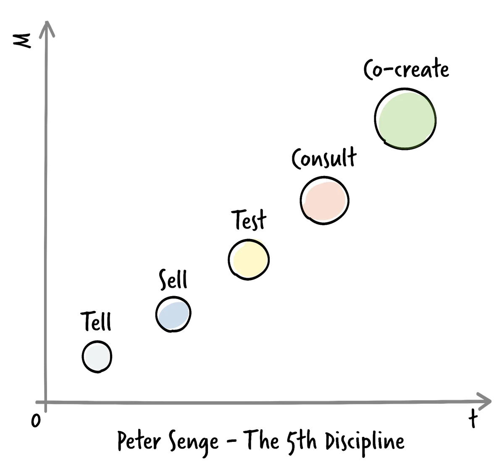

What a product vision is
A product vision is a short, inspiring statement that answers two questions: what are we building, and why does it matter. It needs to work for everyone with a stake in the product, from developers to executives to customers, and it needs to create a shared sense of direction that guides day-to-day decisions.
Five ways to create a vision

There are several ways to arrive at a vision, ranging from low effort and low impact to high effort and high impact. Peter Senge, in The Fifth Discipline Fieldbook, describes five: telling people the vision, selling it to them, testing it by gathering reactions, consulting specialists and stakeholders for input, and co-creating it together with the people who will live with it. Co-creation takes the most time but produces the strongest buy-in, because everyone involved becomes a co-owner of the outcome. A practical approach is to draft a vision through co-creation, then iterate through rounds of consulting and testing until it feels right.
The elevator pitch
One useful format for expressing a vision concisely is the elevator pitch. It follows a simple template: for a target customer who has a specific need or frustration, our product is a category of solution that delivers a key benefit, and unlike the main competitor, we differentiate ourselves in a particular way. Filling in this template forces clarity about who the product is for and why it matters, in language a stakeholder could absorb during a short elevator ride.
From vision to strategy
Vision sets direction, but strategy translates that direction into ongoing decisions about where to invest. Rather than prescribing fixed solutions, it helps to agree on a small set of values that guide judgement, similar in spirit to the Agile Manifesto: valuing the ability to evaluate and adapt frequently over rigid long-range planning, responding to emerging opportunities over sticking to a fixed plan, and managing overall value over managing costs in isolation. These principles create a compass that lets a Product Owner make consistent, defensible decisions even as circumstances change, and they connect naturally to measurable goals and KPIs, since a strategy is only useful if you can tell whether it is working.
Templates
Printable A4 worksheets for applying this resource to your own product.
- Elevator Pitch Canvas Draft a concise, testable statement of your product vision. Download PDF